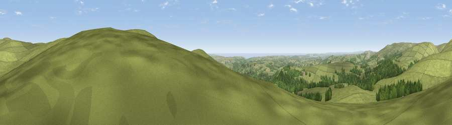

Weatherdon Hill
#3960 in England · top 9% of its area beats it · near Moorhaven VillageWhere it is
The exact computed spot (SX 64908 58821). Click the marker for map links.
The view, rendered

A 360° render of this exact spot computed from the terrain model, tree cover and land cover — summer colours, afternoon light, calibrated against photographs of famous viewpoints. Real trees, hedges and buildings will differ in detail.
The panorama
Grey silhouette: terrain skyline in each direction (720 bearings, Earth curvature and refraction included). Dashed green: skyline with trees (+15 m) and buildings (+8 m) as obstacles. Blue strip: how far the ground is visible on each bearing.
Where the view opens
Wedge length = distance to the farthest visible ground on that bearing (vegetation-aware). Rings at 10, 25 and 50 km.
What fills the view
73% grassland · 21% woodland · 3% cropland · 2% water ·
Angular shares of the visible panorama (visual magnitude), not map area. Landscape diversity 0.34 (0–1 Shannon).
Key numbers
More beautiful places nearby
The staircase of upgrades: each row has a higher view potential than everything closer. Driving times are estimates from straight-line distance, calibrated against real road routing — check an actual route before setting out.
| Place | Direction | Drive | Score |
|---|---|---|---|
| Western Beacon | SSE · 1 km | ~4 min | 81.9 |
| Viewpoint near Lee Moor | WNW · 10 km | ~19 min | 82.7 |
| Viewpoint near Hope | S · 20 km | ~34 min | 84.4 |
| Viewpoint near East Prawle | SSE · 26 km | ~41 min | 84.6 |
| Pencarrow Head | W · 50 km | ~71 min | 86.0 |
| Viewpoint near Lesnewth | WNW · 62 km | ~85 min | 87.7 |
| Viewpoint near Crackington Haven | WNW · 63 km | ~85 min | 88.1 |
| Golden Cap | ENE · 83 km | ~107 min | 88.7 |
50.41368, -3.90273 · source: osm peak · position refined by local search. Computed location — check access rights before visiting.